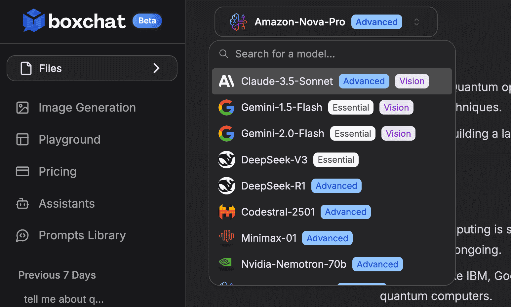
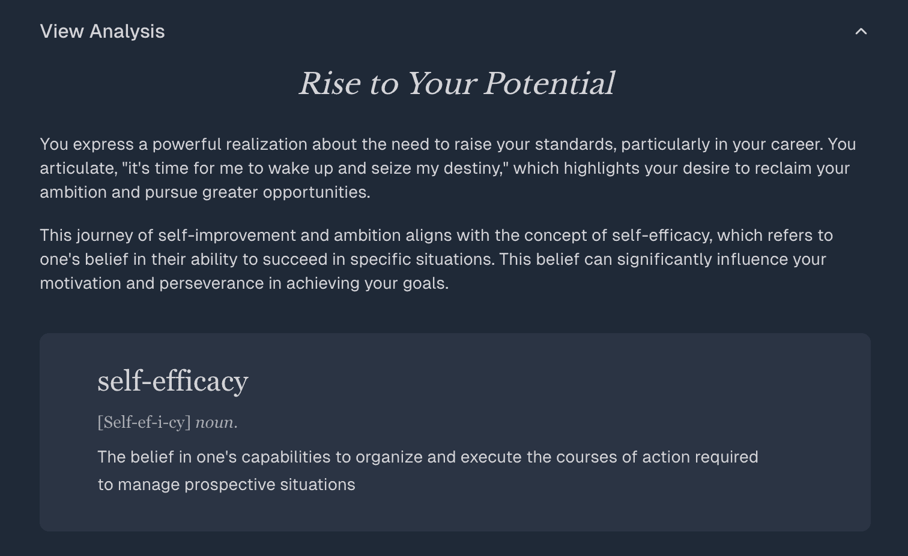
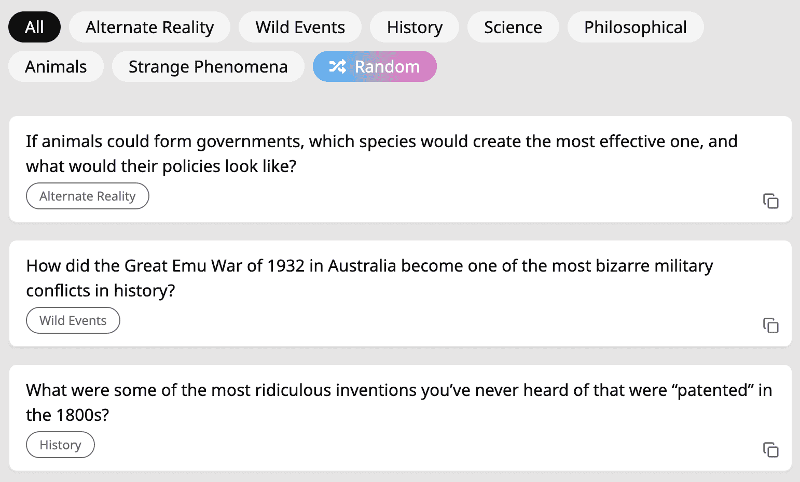
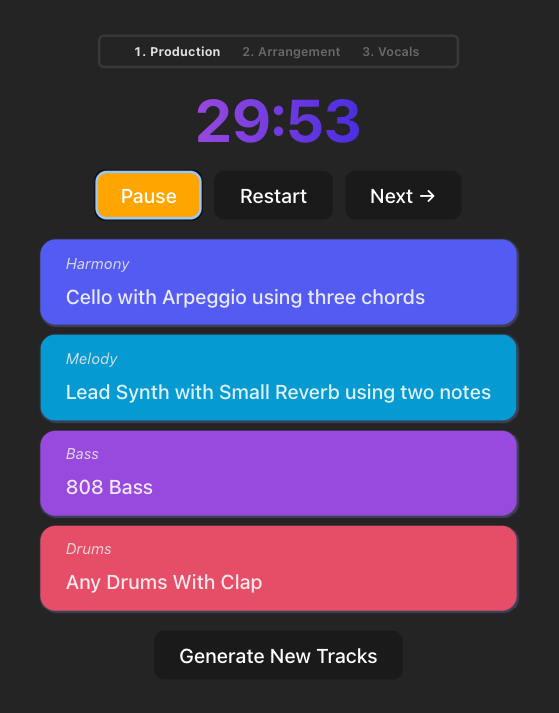

Boxchat
Chat with and compare responses from the latest LLMs side-by-side.
Some backstory: Last year, I realized I had never traveled outside the U.S. With a work contract ending and a healthy amount of savings, I figured there was no better time to do it than now. So, I embarked on a 90-day journey around Asia.
The digital nomad life has always been appealing to me, so while I was out there, I wanted to work on a cool new project—preferably in the AI space. I teamed up with two former colleagues, and we noticed a demand among AI enthusiasts to interact with multiple paid LLMs without needing to subscribe to each one. They wanted to compare how different models responded to the same question.
From there, Boxchat was born. Boxchat is an AI platform that enables conversations with multiple AI models (ChatGPT, Claude, Gemini) through a single interface, allowing users to compare responses side by side. After launch, we were thrilled to see over 2,200 users sign up and generate more than $1,000 in monthly recurring revenue.
I primarily worked on the front end using Next.js and React. I also negotiated with marketing outlets to drive valuable traffic. Boxchat is still live, and you can try it out for free. While I’m no longer actively involved as I prepare and search for a full-time role, I’d still appreciate any feedback and can relay it to the team!

Boxchat's single chat where you can choose from over 20 LLMs to chat with.
Write Forward
Analyze your journal entries through the insights of authors, philosophers, and psychologists.
Write Forward is an app I created solo to support my personal growth journey through AI-powered journaling. The goal was to bridge the gap between personal reflection and the wisdom found in books by connecting journal entries to insights from authors, philosophers, and psychologists.
It helps users feel more understood and validated in their writing by revealing how their thoughts and struggles are part of a larger, timeless conversation. With daily analysis of their journal entries, users can gain new perspectives on their experiences, leading to deeper self-awareness and those “Aha!” moments that drive personal development.
While the landing page is linked above, there is also a MVP that you can get a sample journal analysis linked here. The app was made with Next.js, React, the OpenAI API, and is hosted on Vercel.

The beginning of a sample journal analysis in the app.
Boredchats
The most interesting questions to ask AI.
Bored Chats was an idea I had while waiting for a layover at Toronto Pearson Airport. Some of my friends enjoy reading random, interesting Wikipedia articles, so I wanted to connect that interest with AI models like ChatGPT.
The concept is simple: visit the website when you're bored, browse through the questions until one catches your interest, then click to copy and paste it into ChatGPT. From there, you’ll get an engaging and informative response to keep you entertained while learning something new.
This website was built with React, Next.js, and Tailwind CSS. It is currently hosted on Vercel.

A preview of some of the questions on the homepage.
Create Limited
A creative practice tool for music producers.
With a lot of time spent at home during the pandemic, I decided to take up music production as a new hobby. Over time, I realized that improving my skills required making a lot of songs rather than spending weeks perfecting just one.
This led me to an idea: an app that would generate a random framework for a daily song, paired with a 30-minute timer. The goal was to make practice more engaging by encouraging experimentation and creativity through structured constraints. This app was made with React and Firebase.

The app gives the musician constraints while creating a song in attempt to enable their creative flow.